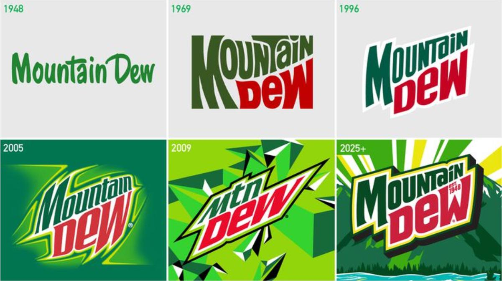

Back to the Future: Why Nostalgic Logos Are Winning Over Gen Z
Logos are no longer just a visual afterthought—they’re a statement. After years of minimalist trends, brands are rediscovering personality, nostalgia, and authenticity to capture the attention of younger consumers. And it’s working.
Minimalism is out. Personality is in.
For years, corporate logos embraced minimalism: flat colors, clean lines, stripped-down designs. Sleek? Yes. Memorable? Not always. Today, brands are flipping the script, embracing nostalgia, and giving logos back their personality.
Retro is the new modern
Pepsi’s 2023 redesign is a perfect example. The soda giant returned to a logo reminiscent of its 1980s iconography—but sharper, bolder, and optimized for the digital age. Mountain Dew is following the trend, swapping simplified wordmarks for designs that feel energetic, fun, and instantly recognizable. These changes aren’t just cosmetic—they demonstrate that brands are listening to what consumers truly want: connection, authenticity, and a sense of history.
When big brands lead, others follow
PepsiCo isn’t just updating a logo—it’s setting a trend for industries far beyond beverages. But there’s a caveat: with AI playing a growing role in design, companies must tread carefully. Coca-Cola’s controversial AI-generated holiday campaign proved that missteps can backfire, turning what should feel innovative into something soulless and off-putting.
Gen Z and zillennials are calling the shots
Young consumers grew up with minimalist logos and now crave more character. Social media amplifies every reaction, turning even small redesigns into viral debates. One misjudged move can spark backlash overnight. Brands that fail to resonate emotionally risk being ignored—or worse, mocked.
Why this trend matters
Logos aren’t just visuals—they’re stories. Brands that strike a balance between nostalgia and modern relevance create deeper connections, standing out in a crowded market. Minimalism isn’t dead, but personality—and a nod to the past—is proving more memorable than ever.
The bottom line
In today’s world, a great logo isn’t just a design; it’s a conversation. Brands that listen, adapt, and respect both history and their audience are the ones that will thrive.